- 1961–1990 대비 1991–2020 감소
- 시간량/년
- 1961–1970 대비 2011–2020 감소
- 시간량/년
- 기온·이슬점을 함께 +1℃ 높인 추가 손실
- 시간량/년
연평균의 차이이며 누적량이 아닙니다. +1℃는 기압·설비를 고정한 별도 실험으로 미래 예보가 아니며 과거 감소와 더하지 않습니다. 소수는 계산값 대조용이며 정밀도를 보증하지 않습니다.
Cooling Resource Atlas · Korea · 1961–2020
서늘한 여름밤 창문을 열면 방이 식듯, 바깥 공기는 건물을 식혀 줍니다. 이처럼 자연이 식혀 주는 능력을 ‘냉기 자원’이라 부르고, 한국의 1961년부터 60년 동안의 변화를 같은 설비 조건으로 재 보았습니다. 온난화로 기온·습도가 오르면 자연 냉방이 줄 수 있지만, 이 비교에서 온난화·도시화·자연변동의 몫을 따로 가리지는 않았습니다.
전국 평균 · 1961–1990 대비 1991–2020
시간량: 같은 설비 조건에서 바깥 공기가 식혀 준 정도를 시간으로 환산한 양입니다. 절반만 식혀 준 2시간은 1시간량으로 셉니다.
공개 패키지 검토본 · 검토용 표시 유지
이해 시험 1차 의견 반영 중 · 재시험·최종 공개 전입니다.
칸마다 1961–1970 평균과 비교 · 한 칸은 약 10km
검토판 시험 · 손으로 넘기는 60년
1961–1970 높이를 0으로 놓았습니다. 그때보다 줄어든 만큼 아래로, 늘어난 만큼 위로 움직입니다. 깊이는 시간량/년이며 실제 지형이 아닙니다.
해마다 날씨에 따라 크게 흔들립니다(±약 140시간량) — 추세는 10년 평균으로 보세요.
±140은 전국 평균 연간값의 변동 규모이며 모든 칸의 오차 범위가 아닙니다.
2011–2020 평균
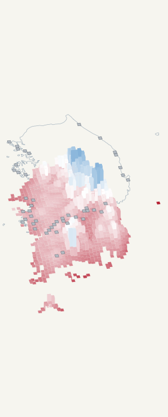
줄어든 양 · 시간량/년
파랑(0) → 흰색(125) → 빨강(260) 순으로 더 많이 줄었습니다. 음수는 증가입니다.
−110보다 작은 값과 260보다 큰 값은 각각 끝색으로 표시합니다. 높이는 실제 값입니다. 회색은 자료 없음이며 0이 아닙니다.
남쪽 하늘에서 약간 서쪽으로 비스듬히 본 모습 · 북쪽은 화면 위쪽으로 약간 왼편 · 제주와 울릉 포함
손가락으로 밀거나 ← → 키로 1년씩 이동하세요. 10년 평균은 선택한 해까지의 10년입니다.
그림 안 설명을 포함한 기존 영상입니다. 자동재생하지 않습니다.
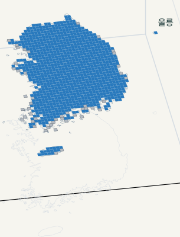
검토용 · 그림을 눌러 크게 보기 · 제주·울릉 포함
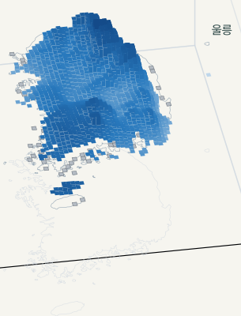
검토용 · 그림을 눌러 크게 보기 · 제주·울릉 포함
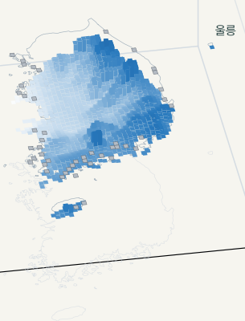
검토용 · 그림을 눌러 크게 보기 · 제주·울릉 포함
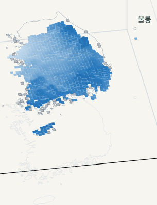
검토용 · 그림을 눌러 크게 보기 · 제주·울릉 포함
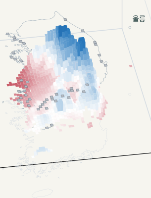
검토용 · 그림을 눌러 크게 보기 · 제주·울릉 포함
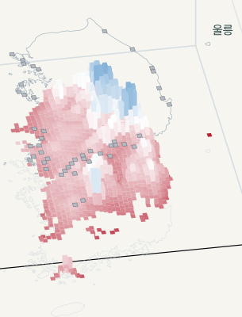
검토용 · 그림을 눌러 크게 보기 · 제주·울릉 포함
검토용 · 그림은 지도 부분만 확대했습니다.
1961–1970보다 얼마나 달라졌나 · 겹치지 않는 10년 평균
남쪽 하늘에서 비스듬히 내려다본 모습
3D 손실 색 범례 (시간량/년)
파랑(0) → 흰색(125) → 빨강(260) 순으로 더 많이 줄었습니다.
0보다 작은 수는 증가이고, 파란색도 0보다 크면 감소입니다.
3D에서 흰색은 125만큼 감소한 곳이고, 2D는 지도마다 색의 기준이 다르니 각 범례를 읽어 주세요.
회색은 자료가 없는 곳이며, 0을 뜻하지 않습니다. 높이 눈금·자료 수·색의 자세한 기준
그림을 누르면 크게 볼 수 있습니다.
아래로 내려갈수록 더 많이 줄었습니다. 가려진 곳과 값은 2D에서 확인하세요. 2D 이미지 열기
선택해서 보기: 1961–1970 이후 변화 영상 재생 (MP4 · 약 6초) · GIF 보기 후행 10년 평균 · 자동재생 없음
전국 값은 자료가 있는 칸들을 같은 비중으로 평균한 값입니다. 면적·인구에 따른 평균이나 전국을 모두 더한 양이 아닙니다. 표준 30년 비교와 10년 비교의 차이 →
우리 주변 · 약 10km 칸
위치는 기기 안에서만 계산하며, 이 사이트는 어떤 서버로도 보내지 않습니다. 저장·추적하지 않습니다. 기기·브라우저의 위치 서비스 정책은 별도입니다.
시·군·구 중심 좌표표의 이용허락을 확인하지 못해 시·도 17곳의 대표 지점만 제공합니다. 도·시 전체 평균이 아닙니다. 대표 좌표 출처
내 위치 버튼이나 시·도를 선택하면 가까운 유효 칸을 찾습니다.
연평균의 차이이며 누적량이 아닙니다. +1℃는 기압·설비를 고정한 별도 실험으로 미래 예보가 아니며 과거 감소와 더하지 않습니다. 소수는 계산값 대조용이며 정밀도를 보증하지 않습니다.
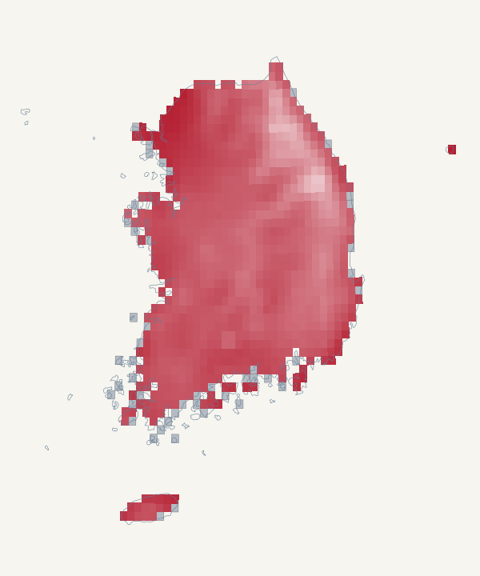
02 · National decade means
첫 10년(1961–1970)보다 마지막 10년(2011–2020)의 냉기 자원이 1년에 약 164시간량 적습니다. 매년 164시간량씩 줄어든다는 뜻도, 60년 누적량도 아닙니다. 중간에 다시 늘어난 10년 구간도 있습니다.
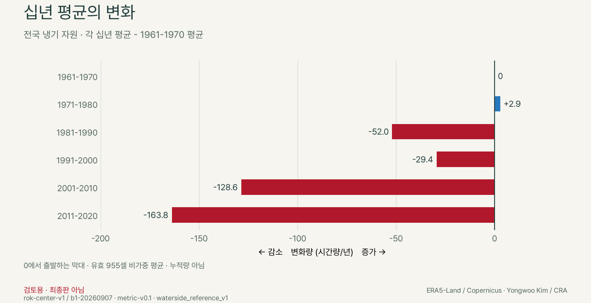
03 · Conditional experiment / 과거 비교와 구분
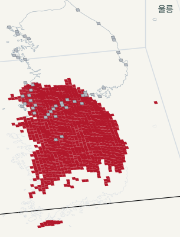
검토용 · 그림은 지도 부분만 확대했습니다.
1991–2020 기온·이슬점 +1도 · 기압·설비는 그대로
남쪽 하늘에서 비스듬히 내려다본 모습
3D 손실 색 범례 (시간량/년)
파랑(0) → 흰색(125) → 빨강(260) 순으로 더 많이 줄었습니다.
0보다 작은 수는 증가이고, 파란색도 0보다 크면 감소입니다.
3D에서 흰색은 125만큼 감소한 곳이고, 2D는 지도마다 색의 기준이 다르니 각 범례를 읽어 주세요.
회색은 자료가 없는 곳이며, 0을 뜻하지 않습니다. 높이 눈금·자료 수·색의 자세한 기준
260 이상은 같은 빨강입니다. 깊이는 실제 값 · 정확한 값은 2D에서. 그림을 누르면 크게 볼 수 있습니다.
아래로 내려갈수록 더 많이 줄었습니다. 가려지는 칸이 많습니다. 정확한 값은 2D에서. 2D 이미지 열기
1991–2020 기상자료의 기온과 이슬점(공기 중 수증기가 물방울로 맺히는 온도)을 함께 1도 이동시켜 계산했습니다. 기압과 설비는 고정했습니다. 이 가정에서 냉기 자원이 얼마나 더 줄어드는지 보여줍니다.
국내 자료가 있는 칸의 추가 손실은 251.7–333.7 시간량/년입니다. 2D의 색은 이 최소–최대 범위에 선형으로 대응하며 0에서 시작하지 않습니다. 옅은 색도 손실이며 안전을 뜻하지 않습니다.
특정 미래 시기의 변화, 손실 속도나 가속도를 예측하는 값이 아닙니다. 위의 과거 기간 차이에 더하거나 같은 종류의 비교로 읽지 않습니다.
Regional comparison · 1961–1990 / 1991–2020
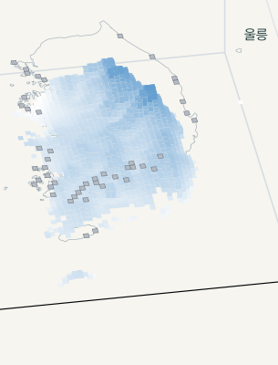
검토용 · 그림은 지도 부분만 확대했습니다.
1961–1990 대비 1991–2020
남쪽 하늘에서 비스듬히 내려다본 모습
3D 손실 색 범례 (시간량/년)
파랑(0) → 흰색(125) → 빨강(260) 순으로 더 많이 줄었습니다.
0보다 작은 수는 증가이고, 파란색도 0보다 크면 감소입니다.
3D에서 흰색은 125만큼 감소한 곳이고, 2D는 지도마다 색의 기준이 다르니 각 범례를 읽어 주세요.
회색은 자료가 없는 곳이며, 0을 뜻하지 않습니다. 높이 눈금·자료 수·색의 자세한 기준
그림을 누르면 크게 볼 수 있습니다.
아래로 내려갈수록 더 많이 줄었습니다. 가려진 곳과 값은 2D에서 확인하세요. 2D 이미지 열기
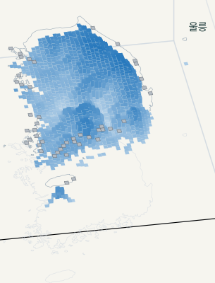
검토용 · 그림은 지도 부분만 확대했습니다.
1961–1990 대비 1991–2020
남쪽 하늘에서 비스듬히 내려다본 모습
3D 손실 색 범례 (시간/년)
파랑(0) → 흰색(125) → 빨강(260) 순으로 더 많이 줄었습니다.
0보다 작은 수는 증가이고, 파란색도 0보다 크면 감소입니다.
3D에서 흰색은 125만큼 감소한 곳이고, 2D는 지도마다 색의 기준이 다르니 각 범례를 읽어 주세요.
회색은 자료가 없는 곳이며, 0을 뜻하지 않습니다. 높이 눈금·자료 수·색의 자세한 기준
시간량과 다른 시계 시간이며 합산하지 않습니다. 그림을 누르면 크게 볼 수 있습니다.
아래로 내려갈수록 더 많이 줄었습니다. 가려진 곳과 값은 2D에서 확인하세요. 2D 이미지 열기
| 지표 | 최소 | 중앙 | 최대 |
|---|---|---|---|
| 냉기 자원 감소 (시간량/년) | 33.4 | 92.9 | 126.2 |
| NCH20 감소 (시간/년) | -2.1 | 46.5 | 94.2 |
| 조건부 +1 K 냉기 자원 추가 손실 (시간량/년) | 251.7 | 277.5 | 333.7 |
소수 자릿수는 계산값을 표시·대조하기 위한 것이며 0.1시간량·0.1시간 수준의 정확도를 뜻하지 않습니다. 자료·설비·경계 선택과 기간 간 변동에 따른 불확실성을 합친 신뢰구간은 제시하지 않았습니다. 기준·비교·차이는 각각 반올림하므로 표시값의 뺄셈과 차이가 날 수 있습니다.
국내 자료가 있는 칸의 분포(모든 칸을 같은 비중으로 셈)이며 전국 총량·면적가중 평균·인구 위험이 아닙니다.
서울 가장 가까운 칸의 냉기 자원은 두 기간 사이 연평균 약 114 시간량/년 감소한 것으로 계산됐습니다.
냉기 자원은 부분 기여를 합친 시간량으로, NCH20은 밤 기온이 20°C 이하였던 실제 시계 시간으로 잽니다. 단위와 양이 다르므로 합산하지 않습니다.
서울·대관령·제주 가장 가까운 칸(약 10km). 도시 전체 평균이 아닙니다. 감소량은 기준−비교이며, 60년 누적량이 아닌 연평균 차이입니다.
| 가장 가까운 칸 | 1961-1990 | 1991-2020 | 감소량 |
|---|---|---|---|
| 서울 | 6,171.8 | 6,057.8 | 114.0 |
| 대관령 | 7,036.1 | 6,982.2 | 53.9 |
| 제주 | 5,647.5 | 5,535.8 | 111.7 |
| 가장 가까운 칸 | 1961-1990 | 1991-2020 | 감소량 |
|---|---|---|---|
| 서울 | 3,014.5 | 2,962.7 | 51.7 |
| 대관령 | 3,370.9 | 3,366.5 | 4.4 |
| 제주 | 2,768.1 | 2,705.7 | 62.3 |
소수 자릿수는 계산값을 표시·대조하기 위한 것이며 0.1시간량·0.1시간 수준의 정확도를 뜻하지 않습니다. 자료·설비·경계 선택과 기간 간 변동에 따른 불확실성을 합친 신뢰구간은 제시하지 않았습니다. 기준·비교·차이는 각각 반올림하므로 표시값의 뺄셈과 차이가 날 수 있습니다.
두 기간의 차이는 고정 설비 모형에 서로 다른 기상 입력을 넣어 얻은 기술적 비교입니다. 온실가스 강제력, 도시화·국지 폐열, 자연변동 각각의 기여를 분리하거나 인위적 기후변화에 귀속하지 않습니다. 30년 평균 비교 자체가 자연변동의 제거를 보장하지는 않습니다.
Versioned data
rok-center-v1 / b1-20260907 · metric-v0.1 · waterside_reference_v1. 검토 패키지이며 프로젝트 산출 집계 데이터·지도·영상의 CC BY 4.0은 2026-10-20 발효되었습니다. 데이터 README의 조립 당시 표기는 SHA 보존을 위한 이력이며, 현재 이용허락은 데이터 라이선스를 따릅니다.
이 대조는 서울·대관령·제주의 1991–2020 짝자료에 한정됩니다. 전국 모든 지역, 1961–1990을 포함한 장기 변화, 미래 또는 조건부 +1 K 민감도를 검증한 결과가 아닙니다. 실제 설비 운전 자료와의 검증도 수행하지 않았습니다.
여기서 ‘자원’은 고정 설비 조건에서 활용 가능한 잠재 냉기 자원을 뜻합니다. 냉기 자원의 감소는 엑서지 파괴량이나 엔트로피 생성량의 측정·추정치가 아닙니다. 엑서지·엔트로피는 개념적 배경일 뿐, 이 시간량 지표를 그 물리량으로 환산하지 않았습니다.